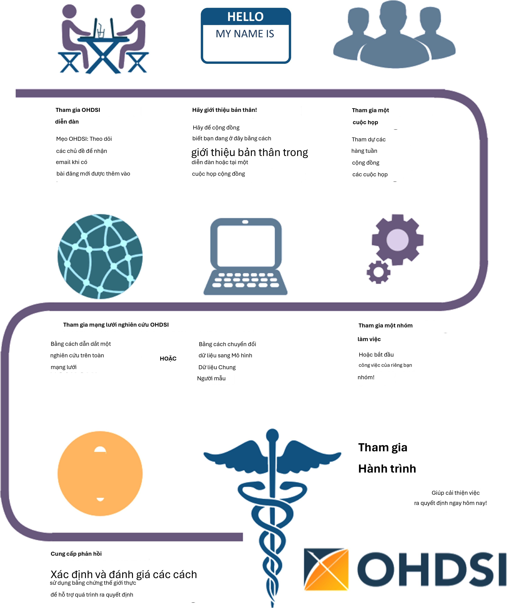

Chương 2: Nơi bắt đầu
Nơi bắt đầu
Người phụ trách chương: Hamed Abedtash & Kristin Kostka
“Hành trình ngàn dặm bắt đầu bằng một bước chân.” - Lão Tử
Cộng đồng OHDSI đại diện cho một bức tranh khảm các bên liên quan trên khắp học viện, ngành công nghiệp và các thực thể chính phủ. Công việc của chúng tôi mang lại lợi ích cho một loạt các cá nhân và tổ chức, bao gồm bệnh nhân, nhà cung cấp dịch vụ và nhà nghiên cứu, cũng như các hệ thống chăm sóc sức khỏe, ngành công nghiệp và các cơ quan chính phủ. Lợi ích này đạt được bằng cách cải thiện cả chất lượng phân tích dữ liệu chăm sóc sức khỏe cũng như tính hữu ích của dữ liệu chăm sóc sức khỏe đối với những bên liên quan này. Chúng tôi tin rằng nghiên cứu quan sát là một lĩnh vực được hưởng lợi rất nhiều từ tư duy đột phá. Chúng tôi tích cực tìm kiếm và khuyến khích các cách tiếp cận phương pháp luận mới mẻ trong công việc của mình.
Tham gia hành trình
Mọi người đều được chào đón tham gia tích cực vào OHDSI, cho dù bạn là bệnh nhân, chuyên gia y tế, nhà nghiên cứu hay bất kỳ ai tin tưởng vào mục tiêu của chúng tôi. OHDSI duy trì một mô hình thành viên bao trùm. Để trở thành một cộng tác viên OHDSI không yêu cầu phí thành viên. Hợp tác đơn giản như việc giơ tay để được đưa vào danh sách thành viên OHDSI hàng năm. Sự tham gia hoàn toàn là tự nguyện. Một cộng tác viên có thể có bất kỳ mức độ đóng góp nào trong cộng đồng, từ việc tham dự các cuộc gọi cộng đồng hàng tuần đến dẫn đầu các nghiên cứu mạng lưới hoặc các nhóm làm việc OHDSI. Các cộng tác viên không bắt buộc phải là người nắm giữ dữ liệu để được coi là thành viên tích cực của cộng đồng. Cộng đồng OHDSI nhằm phục vụ các nhà nắm giữ dữ liệu, nhà nghiên cứu, nhà cung cấp dịch vụ chăm sóc sức khỏe và bệnh nhân & người tiêu dùng như nhau. Hồ sơ của các cộng tác viên được duy trì và cập nhật định kỳ trên trang web OHDSI. Tư cách thành viên được thúc đẩy thông qua các cuộc gọi cộng đồng OHDSI, các nhóm làm việc và các chương khu vực.

Hình 2.1: Tham gia hành trình - Cách trở thành một cộng tác viên OHDSI.
Diễn đàn OHDSI
Diễn đàn OHDSI1 là một trang thảo luận trực tuyến nơi các cộng tác viên cộng đồng OHDSI có thể thực hiện các cuộc trò chuyện dưới dạng các tin nhắn được đăng. Các diễn đàn bao gồm một cấu trúc thư mục giống như cây. Phần trên cùng là “Danh mục”. Các diễn đàn có thể được chia thành các danh mục cho các cuộc thảo luận liên quan. Dưới các danh mục là các diễn đàn con và các diễn đàn con này có thể có thêm các diễn đàn con khác. Các chủ đề (thường được gọi là các luồng) nằm dưới cấp độ diễn đàn con thấp nhất và đây là những nơi mà các thành viên diễn đàn có thể bắt đầu các cuộc thảo luận hoặc bài đăng của họ.
Trong các diễn đàn OHDSI, bạn có thể tìm thấy các danh mục nội dung bao gồm:
Chung: dành cho các cuộc thảo luận chung về cộng đồng OHDSI và cách tham gia
Người triển khai: dành cho các cuộc thảo luận về cách triển khai Mô hình dữ liệu chung và khung phân tích OHDSI trong môi trường địa phương của bạn
Nhà phát triển: dành cho các cuộc thảo luận xung quanh việc phát triển mã nguồn mở các ứng dụng OHDSI và các công cụ khác tận dụng OMOP CDM
Nhà nghiên cứu: dành cho các cuộc thảo luận xung quanh nghiên cứu dựa trên CDM, bao gồm tạo bằng chứng, nghiên cứu hợp tác, phương pháp thống kê và các chủ đề khác mà Mạng lưới nghiên cứu OHDSI quan tâm
Người xây dựng CDM: dành cho các cuộc thảo luận về việc phát triển CDM đang diễn ra, bao gồm các yêu cầu, từ vựng và các khía cạnh kỹ thuật
Người dùng từ vựng: dành cho thảo luận về nội dung từ vựng
Các chi nhánh khu vực (ví dụ: Hàn Quốc, Trung Quốc, Châu Âu): dành cho các thảo luận khu vực bằng ngôn ngữ bản địa liên quan đến việc triển khai OMOP tại địa phương và các hoạt động của cộng đồng OHDSI
Để bắt đầu đăng chủ đề của riêng bạn, bạn sẽ cần đăng ký tài khoản. Sau khi có tài khoản diễn đàn, bạn được khuyến khích giới thiệu bản thân trong Chủ đề Chung (General Topic) dưới luồng có tên “Chào mừng đến với OHDSI! - Vui lòng giới thiệu bản thân”. Bạn được mời phản hồi và 1) Giới thiệu bản thân và cho chúng tôi biết một chút về công việc của bạn và 2) Cho chúng tôi biết cách bạn muốn giúp đỡ cộng đồng (ví dụ: phát triển phần mềm, chạy các nghiên cứu, viết bài báo nghiên cứu, v.v.). Bây giờ bạn đã bắt đầu Hành trình OHDSI của mình! Từ đây, bạn được khuyến khích tham gia vào các cuộc thảo luận. Cộng đồng OHDSI khuyến khích sử dụng các Diễn đàn như một cách để đặt câu hỏi, thảo luận về các ý tưởng mới và cộng tác.

Các sự kiện OHDSI
OHDSI thường xuyên tổ chức các sự kiện trực tiếp để tạo cơ hội cho các cộng tác viên học hỏi lẫn nhau và kết nối nhằm thúc đẩy các mối quan hệ hợp tác trong tương lai. Các sự kiện này được thông báo trên trang web OHDSI và miễn phí cho bất kỳ ai quan tâm tham dự.
Các Hội nghị chuyên đề OHDSI (OHDSI Symposia) là các hội nghị khoa học, được tổ chức hàng năm tại Mỹ, Châu Âu và Châu Á, nơi các cộng tác viên có thể trình bày nghiên cứu mới nhất của họ thông qua các bài thuyết trình toàn thể, trình bày áp phích và giới thiệu phần mềm. Các Hội nghị chuyên đề OHDSI cung cấp một địa điểm tuyệt vời để kết nối và tìm hiểu về những tiến bộ mới nhất trên toàn cộng đồng. Các Hội nghị chuyên đề OHDSI thường đi kèm với các buổi hướng dẫn OHDSI, do các cộng tác viên OHDSI đồng nghiệp giảng dạy với tư cách là giảng viên khóa học, cung cấp cho những người mới tham gia cộng đồng cơ hội thực hành về các chủ đề xung quanh tiêu chuẩn dữ liệu và các phương pháp phân tích tốt nhất. Các buổi hướng dẫn này thường được ghi hình và cung cấp trên trang web OHDSI sau các sự kiện dành cho những người không thể tham dự trực tiếp.
Các sự kiện gặp mặt trực tiếp của Cộng tác viên OHDSI là các diễn đàn nhỏ hơn thường tập trung vào một vấn đề cùng quan tâm để giải quyết trong thời gian làm việc cùng nhau. Các sự kiện trước đây bao gồm hack-a-thon về kiểu hình, hack-a-thon về chất lượng dữ liệu và hack-a-thon về tài liệu phần mềm nguồn mở. OHDSI đã tổ chức nhiều sự kiện Study-a-thon, nơi mục tiêu của phiên làm việc kéo dài nhiều ngày là cộng tác theo nhóm về một câu hỏi nghiên cứu cụ thể bằng cách thiết kế và triển khai phân tích quan sát phù hợp, thực hiện nghiên cứu trên mạng lưới OHDSI và tổng hợp bằng chứng để phổ biến công khai. Trong tất cả các sự kiện này, có một mong muốn chung là giải quyết một vấn đề chung nhưng cũng có mối quan tâm chung trong việc cung cấp một môi trường thân thiện khuyến khích học tập và cải tiến liên tục quy trình giải quyết vấn đề mang tính cộng tác.
Tìm hiểu thêm về sức mạnh của Cộng đồng OHDSI. Khám phá các hội nghị chuyên đề, các cuộc họp trực tiếp trước đây và xem các buổi hướng dẫn OHDSI bằng cách truy cập phần Các sự kiện trước đây (Past Events) trên trang web OHDSI. Phần Các sự kiện trước đây được cập nhật thường xuyên để lưu trữ các sự kiện của cộng đồng.
Các cuộc gọi cộng đồng OHDSI
Các cuộc gọi cộng đồng OHDSI (OHDSI Community Calls) là cơ hội hàng tuần để làm nổi bật các hoạt động đang diễn ra trong cộng đồng OHDSI. Được tổ chức vào mỗi thứ Ba từ 12 giờ trưa đến 1 giờ chiều giờ ET, các cuộc họp từ xa này là thời gian để cộng đồng OHDSI cùng nhau chia sẻ những phát triển gần đây và ghi nhận những thành tựu của các cộng tác viên cá nhân, các nhóm làm việc và cộng đồng nói chung. Mỗi cuộc họp hàng tuần đều được ghi lại và các bài thuyết trình được lưu trữ trong các tài nguyên trên trang web OHDSI.
Tất cả các Cộng tác viên OHDSI đều được chào đón tham gia cuộc họp từ xa hàng tuần này và được khuyến khích đề xuất các chủ đề thảo luận của cộng đồng. Các cuộc gọi cộng đồng OHDSI có thể là một diễn đàn để chia sẻ kết quả nghiên cứu, trình bày và tìm kiếm phản hồi cho các công việc đang thực hiện, giới thiệu các công cụ phần mềm nguồn mở đang được phát triển, tranh luận về các phương pháp thực hành tốt nhất của cộng đồng về mô hình hóa dữ liệu và phân tích, và cùng nhau suy nghĩ về các cơ hội hợp tác trong tương lai cho các khoản tài trợ/ấn phẩm/hội thảo hội nghị. Nếu bạn là một Cộng tác viên có chủ đề cho một cuộc họp Cộng tác viên OHDSI sắp tới, bạn được mời đăng suy nghĩ của mình trên
Diễn đàn OHDSI.
Là người mới tham gia cộng đồng OHDSI, bạn được khuyến khích thêm loạt cuộc gọi này vào lịch của mình để làm quen với những gì đang diễn ra trên mạng lưới OHDSI. Nếu bạn muốn tham gia một cuộc gọi OHDSI, vui lòng tham khảo wiki OHDSI. Các chủ đề cuộc gọi cộng đồng thay đổi theo từng tuần. Bạn cũng có thể tham khảo OHDSI Weekly Digest trên diễn đàn OHDSI để biết thêm thông tin về các chủ đề thuyết trình hàng tuần. Những người mới tham gia được mời giới thiệu bản thân trong cuộc gọi đầu tiên của họ và kể cho cộng đồng nghe về bản thân, nền tảng của họ và điều gì đã đưa họ đến với OHDSI.
Các nhóm làm việc OHDSI
OHDSI có nhiều dự án đang diễn ra do các nhóm làm việc dẫn dắt. Mỗi nhóm làm việc có đội ngũ lãnh đạo riêng để xác định các mục tiêu, đích đến và các sản phẩm trí tuệ cần đóng góp cho cộng đồng. Việc tham gia nhóm làm việc mở cho tất cả những ai quan tâm đến việc đóng góp cho các mục tiêu và đích đến của dự án. Các nhóm làm việc có thể là các nhóm lâu dài, các mục tiêu chiến lược hoặc các dự án ngắn hạn để hoàn thành một nhu cầu cụ thể trong cộng đồng. Nhịp độ cuộc họp của nhóm làm việc được xác định bởi lãnh đạo dự án và sẽ khác nhau giữa các nhóm. Danh sách các nhóm làm việc đang hoạt động được duy trì trên OHDSI Wiki.
Bảng 2.1 cung cấp tài liệu tham khảo nhanh về các nhóm làm việc OHDSI đang hoạt động. Bạn được khuyến khích tham gia một cuộc gọi và tìm hiểu thêm.
Bảng 2.1: Các nhóm làm việc OHDSI đáng chú ý
Nhóm làm việc
Tên Mục tiêu Đối tượng mục tiêu
Atlas & WebAPI
CDM &
Từ vựng
Atlas và WebAPI là một phần của kiến trúc phần mềm nguồn mở OHDSI nhằm cung cấp các khả năng phân tích chuẩn hóa được xây dựng trên nền tảng của Mô hình dữ liệu chung OMOP (CDM).
Tiếp tục phát triển Mô hình dữ liệu chung OMOP nhằm mục đích phân tích có hệ thống, chuẩn hóa và quy mô lớn áp dụng cho dữ liệu bệnh nhân lâm sàng. Cải thiện chất lượng của Từ vựng chuẩn hóa bằng cách tăng phạm vi bao phủ của chúng đối với các hệ thống mã hóa quốc tế và các khía cạnh lâm sàng của chăm sóc bệnh nhân để hỗ trợ các phân tích chuẩn hóa do các nhóm làm việc khác phát triển.
Các nhà phát triển phần mềm Java & JavaScript nhằm mục đích cải thiện và đóng góp cho
nền tảng Atlas/WebAPI nguồn mở Bất kỳ ai quan tâm đến việc cải thiện Mô hình dữ liệu chung OMOP và Từ vựng chuẩn hóa để đáp ứng mọi nhu cầu và trường hợp sử dụng
Nhóm làm việc
Tên Mục tiêu Đối tượng mục tiêu
Genomics Mở rộng OMOP CDM để kết hợp dữ liệu gen từ bệnh nhân. Nhóm sẽ xác định một lược đồ tương thích với CDM có thể lưu trữ thông tin về các biến thể di truyền từ nhiều quy trình giải trình tự khác nhau.
Mở cho tất cả
Ước tính cấp độ quần thể
Xử lý ngôn ngữ tự nhiên
Dự đoán cấp độ bệnh nhân
Thư viện kiểu hình chuẩn vàng FHIR
Nhóm làm việc
Phát triển các phương pháp khoa học cho nghiên cứu quan sát dẫn đến các ước tính cấp độ quần thể về các tác động chính xác, đáng tin cậy và có thể tái tạo, đồng thời tạo điều kiện cho cộng đồng sử dụng các phương pháp này.
Thúc đẩy việc sử dụng thông tin văn bản từ Hồ sơ sức khỏe điện tử (EHR) cho các nghiên cứu quan sát dưới sự bảo trợ của OHDSI. Để tạo điều kiện cho mục tiêu này, nhóm sẽ phát triển các phương pháp và phần mềm có thể được triển khai để sử dụng văn bản lâm sàng cho các nghiên cứu của cộng đồng OHDSI. Thiết lập một quy trình chuẩn hóa để phát triển các mô hình dự đoán lấy bệnh nhân làm trung tâm chính xác và được hiệu chuẩn tốt, có thể được sử dụng cho nhiều kết quả quan tâm và có thể áp dụng cho dữ liệu chăm sóc sức khỏe quan sát từ bất kỳ phân nhóm bệnh nhân nào được quan tâm
Cho phép các thành viên của cộng đồng OHDSI tìm kiếm, đánh giá và sử dụng các định nghĩa nhóm thuần tập đã được cộng đồng xác nhận cho nghiên cứu và các hoạt động khác
Thiết lập lộ trình cho việc tích hợp OHDSI FHIR và đưa ra các khuyến nghị cho cộng đồng rộng lớn hơn về việc tận dụng triển khai FHIR và dữ liệu trong cộng đồng EHR cho
các nghiên cứu quan sát dựa trên OHDSI và để phổ biến dữ liệu và kết quả nghiên cứu của OHDSI thông qua các công cụ và API dựa trên FHIR.
Mở cho tất cả
Mở cho tất cả
Mở cho tất cả
Mở cho tất cả những ai quan tâm đến việc giám tuyển và xác nhận kiểu hình
Mở cho tất cả những ai quan tâm đến khả năng tương tác
GIS Mở rộng OMOP CDM và tận dụng các công cụ OHDSI để lịch sử tiếp xúc môi trường của bệnh nhân có thể được liên kết với các kiểu hình lâm sàng của họ
Mở cho tất cả những ai quan tâm đến
các thuộc tính địa lý liên quan đến sức khỏe
Nhóm làm việc
Tên Mục tiêu Đối tượng mục tiêu
Thử nghiệm lâm sàng
Tìm hiểu các trường hợp sử dụng thử nghiệm lâm sàng nơi nền tảng & hệ sinh thái OHDSI có thể hỗ trợ các thử nghiệm ở bất kỳ khía cạnh nào, và hỗ trợ thúc đẩy các cập nhật trong các công cụ OHDSI để hỗ trợ.
Mở cho tất cả những ai quan tâm đến thử nghiệm lâm sàng
THEMIS Mục tiêu của THEMIS là phát triển các quy ước tiêu chuẩn, vượt ra ngoài các quy ước OMOP CDM, để đảm bảo các giao thức ETL được thiết kế tại mỗi cơ sở OMOP có chất lượng cao nhất, có thể tái tạo và hiệu quả.
Siêu dữ liệu &
Chú thích
Dữ liệu sức khỏe do bệnh nhân tạo ra (PGHD)
Phụ nữ OHDSI
Ban chỉ đạo
Mục tiêu của chúng tôi là xác định một quy trình tiêu chuẩn để lưu trữ siêu dữ liệu và chú thích do con người và máy tạo ra trong Mô hình dữ liệu chung để đảm bảo các nhà nghiên cứu có thể tiêu thụ và tạo ra các sản phẩm dữ liệu hữu ích về các tập dữ liệu quan sát.
Mục tiêu của WG này là phát triển các quy ước ETL, quy trình tích hợp với dữ liệu lâm sàng và quy trình phân tích cho PGHD, được tạo ra thông qua các thiết bị Thông minh/Ứng dụng/Thiết bị đeo.
Cung cấp một diễn đàn cho phụ nữ trong cộng đồng OHDSI cùng nhau thảo luận về những thách thức mà họ phải đối mặt khi là phụ nữ làm việc trong lĩnh vực khoa học, công nghệ, kỹ thuật và toán học (STEM). Chúng tôi nhằm mục đích tạo điều kiện cho các cuộc thảo luận nơi phụ nữ có thể chia sẻ quan điểm, nêu lên mối quan ngại, đề xuất ý tưởng về cách cộng đồng OHDSI có thể hỗ trợ phụ nữ trong lĩnh vực STEM, và cuối cùng là truyền cảm hứng cho phụ nữ trở thành những nhà lãnh đạo trong cộng đồng và các lĩnh vực tương ứng của họ.
Duy trì tầm nhìn, sứ mệnh và các giá trị của OHDSI bằng cách đảm bảo tất cả các hoạt động và sự kiện của OHDSI đều phù hợp với nhu cầu của cộng đồng đang phát triển của chúng ta. Ngoài ra, nhóm đóng vai trò là nhóm cố vấn cho trung tâm điều phối OHDSI tại Columbia bằng cách cung cấp hướng dẫn cho định hướng tương lai của OHDSI.
Mở cho tất cả
Mở cho tất cả
Mở cho tất cả những ai đồng nhất với sứ mệnh này
Các nhà lãnh đạo trong cộng đồng
Các chi nhánh khu vực OHDSI
Một chi hội khu vực OHDSI đại diện cho một nhóm các cộng tác viên OHDSI ở một khu vực địa lý, những người mong muốn tổ chức các sự kiện kết nối và cuộc họp địa phương để giải quyết các vấn đề đặc thù của vị trí địa lý của họ. Hiện nay, các chi hội khu vực OHDSI bao gồm OHDSI tại Châu Âu2, OHDSI tại Hàn Quốc3 và OHDSI tại Trung Quốc.4 Nếu bạn muốn thành lập một chi hội khu vực OHDSI tại khu vực của mình, bạn có thể thực hiện theo quy trình thành lập chi hội khu vực OHDSI được nêu trên trang web của OHDSI.
Mạng lưới nghiên cứu OHDSI
Nhiều cộng tác viên OHDSI quan tâm đến việc chuyển đổi dữ liệu của họ sang Mô hình dữ liệu chung OMOP. Mạng lưới nghiên cứu OHDSI đại diện cho một cộng đồng toàn cầu, đa dạng của các cơ sở dữ liệu quan sát đã trải qua các quy trình Trích xuất-Chuyển đổi-Nạp (ETL) để trở nên tuân thủ OMOP. Nếu hành trình của bạn trong cộng đồng OHDSI bao gồm việc chuyển đổi dữ liệu, có rất nhiều tài nguyên cộng đồng sẵn có để hỗ trợ bạn trong hành trình của mình, bao gồm các bài hướng dẫn về OMOP CDM và Từ vựng, các công cụ có sẵn miễn phí để hỗ trợ chuyển đổi và các nhóm làm việc nhắm vào các lĩnh vực cụ thể hoặc các loại chuyển đổi dữ liệu. Các cộng tác viên OHDSI được khuyến khích sử dụng diễn đàn OHDSI để thảo luận và khắc phục các thách thức phát sinh trong quá trình chuyển đổi CDM.
Vị trí của bạn
Đến đây, bạn có thể đang tự hỏi: tôi phù hợp ở đâu trong Cộng đồng OHDSI?
Tôi là một nhà nghiên cứu lâm sàng đang muốn bắt đầu một nghiên cứu. Nếu bạn là một nhà nghiên cứu lâm sàng quan tâm đến việc sử dụng Mạng lưới nghiên cứu OHDSI để trả lời một câu hỏi cụ thể – thậm chí có thể xuất bản một bài báo – bạn đã đến đúng nơi. Bạn có thể bắt đầu bằng cách đăng ý tưởng của mình lên Chủ đề Nhà nghiên cứu OHDSI (OHDSI Researchers Topic) trên Diễn đàn OHDSI. Điều này sẽ giúp bạn kết nối với các nhà nghiên cứu có cùng mối quan tâm. OHDSI rất thích xuất bản và có nhiều tài nguyên sẵn có để đẩy nhanh việc biến câu hỏi nghiên cứu của bạn thành một phân tích và một bài báo. Bạn có thể tìm thêm thông tin trong Chương 11, 12 và 13.
Tôi muốn đọc và tiêu thụ thông tin mà cộng đồng OHDSI tạo ra. Cho dù bạn là bệnh nhân, bác sĩ lâm sàng hành nghề hay chuyên gia trong lĩnh vực chăm sóc sức khỏe, OHDSI muốn cung cấp cho bạn bằng chứng chất lượng cao để giúp bạn hiểu rõ hơn về kết quả sức khỏe. Có thể đã lâu rồi bạn không viết mã. Có thể bạn không bao giờ lập trình. Bạn có một vị trí trong cộng đồng này. Chúng tôi gọi bạn là người tiêu dùng bằng chứng – bạn là những cá nhân đang biến nghiên cứu OHDSI thành hành động. Bạn đang sàng lọc để biết OHDSI đã và đang tạo ra bằng chứng gì, có thể cũng muốn đề xuất các câu hỏi phù hợp với bạn. Chúng tôi chào đón bạn tham gia thảo luận. Bắt đầu đặt câu hỏi trên Diễn đàn OHDSI. Tham dự các Cuộc gọi Cộng đồng và nghe về các nghiên cứu mới nhất. Tham dự các Hội nghị chuyên đề OHDSI và các Cuộc họp trực tiếp để tương tác trực tiếp
2https://www.ohdsi-europe.org/
3https://forums.ohdsi.org/c/For-collaborators-wishing-to-communicate-in-Korea 4https://ohdschina.org/
với cộng đồng. Câu hỏi của bạn là một phần quan trọng của cộng đồng OHDSI. Hãy lên tiếng và giúp chúng tôi tìm hiểu thêm về bằng chứng bạn đang tìm kiếm!
Tôi làm việc trong vai trò lãnh đạo chăm sóc sức khỏe. Tôi có thể là chủ sở hữu dữ liệu và/hoặc đại diện cho một tổ chức. Tôi đang đánh giá tính hữu ích của OMOP CDM và các công cụ phân tích OHDSI cho tổ chức của mình. Với tư cách là quản trị viên/lãnh đạo của một tổ chức, bạn có thể đã nghe nói về OHDSI và tò mò muốn biết OMOP CDM có thể hoạt động như thế nào cho các trường hợp sử dụng của bạn. Bạn có thể bắt đầu bằng cách xem qua các tài liệu về Sự kiện quá khứ của OHDSI để xem khối lượng nghiên cứu. Bạn có thể tham gia một Cuộc gọi Cộng đồng và chỉ cần lắng nghe. Bạn cũng có thể thấy rằng Chương 7 (Các trường hợp sử dụng phân tích dữ liệu) giúp bạn hiểu loại nghiên cứu mà OMOP CDM và các công cụ phân tích OHDSI có thể kích hoạt. Cộng đồng OHDSI ở đây để hỗ trợ bạn trong hành trình của mình. Đừng ngại lên tiếng và yêu cầu các ví dụ nếu bạn có những lĩnh vực cụ thể mà bạn quan tâm. Hơn 200 tổ chức trên khắp thế giới đang cộng tác trong OHDSI, có rất nhiều câu chuyện thành công để giúp giới thiệu giá trị của cộng đồng này.
Tôi là quản trị viên cơ sở dữ liệu đang tìm cách ETL/chuyển đổi dữ liệu của tổ chức mình sang OMOP CDM. Việc chọn “OMOP” dữ liệu của bạn là một nỗ lực mới mẻ và đáng giá. Nếu bạn chỉ mới bắt đầu với quy trình ETL của mình, hãy tham khảo các Slide Hướng dẫn ETL Cộng đồng OHDSI hoặc đăng ký tham gia đợt cung cấp tiếp theo tại một Hội nghị chuyên đề OHDSI sắp tới. Hãy cân nhắc tham gia các cuộc gọi nhóm làm việc THEMIS và tham gia Diễn đàn OHDSI với các câu hỏi của bạn. Bạn sẽ tìm thấy rất nhiều kiến thức trong cộng đồng những người quan tâm đến việc giúp bạn triển khai thành công OMOP CDM. Đừng ngại ngùng!
Tôi là nhà thống kê sinh học và/hoặc nhà phát triển phương pháp quan tâm đến việc đóng góp vào ngăn xếp công cụ OHDSI. Bạn am hiểu về R. Bạn biết cách cam kết với Git. Quan trọng nhất, bạn mong muốn mang chuyên môn của mình vào Thư viện Phương pháp OHDSI và phát triển hơn nữa các phương pháp luận này. Bạn sẽ muốn bắt đầu bằng cách tham gia các cuộc gọi nhóm làm việc Ước tính cấp độ quần thể hoặc Dự đoán cấp độ bệnh nhân để nghe thêm về các ưu tiên hiện tại của cộng đồng. Khi bạn đang sử dụng các công cụ OHDSI, bạn cũng có thể gửi các Vấn đề (Issues) dưới kho lưu trữ GitHub tương ứng (ví dụ: nếu đó là vấn đề về gói SQL Render, bạn sẽ gửi dưới Kho lưu trữ GitHub cho OHDSI/SqlRender). Chúng tôi chào đón những đóng góp của bạn!
Tôi là nhà phát triển phần mềm quan tâm đến việc xây dựng một công cụ bổ sung cho ngăn xếp công cụ OHDSI. Chào mừng bạn đến với cộng đồng! Là một phần của sứ mệnh OHDSI, các công cụ của chúng tôi là nguồn mở và được quản lý theo giấy phép Apache. Bạn được chào đón phát triển các giải pháp bổ sung cho ngăn xếp công cụ OHDSI. Hãy thoải mái tham gia một nhóm làm việc và đưa ra ý tưởng của bạn. Vui lòng lưu ý rằng OHDSI đầu tư rất nhiều vào khoa học mở và cộng tác mở. Các thuật toán và giải pháp phần mềm độc quyền được chào đón nhưng không phải là trọng tâm chính trong các nỗ lực phát triển phần mềm của chúng tôi.
Tôi là nhà tư vấn muốn tư vấn cho Cộng đồng OHDSI. Chào mừng bạn đến với cộng đồng! Chuyên môn của bạn rất có giá trị và được đánh giá cao. Bạn được chào đón quảng bá dịch vụ của mình trên Diễn đàn OHDSI, nếu phù hợp. Bạn được mời tham gia cùng chúng tôi tại các Buổi hướng dẫn OHDSI và cân nhắc đóng góp lại bằng cách đóng góp chuyên môn của bạn trong các biên bản Hội nghị chuyên đề và các cuộc họp trực tiếp OHDSI trong suốt cả năm.
Tôi là sinh viên đang muốn tìm hiểu thêm về OHDSI. Bạn đã đến đúng nơi! Hãy cân nhắc
tham gia một Cuộc gọi Cộng đồng OHDSI và giới thiệu bản thân. Bạn được khuyến khích đi sâu vào các bài hướng dẫn OHDSI, tham dự các Hội nghị chuyên đề OHDSI và các cuộc họp trực tiếp để tìm hiểu thêm về các phương pháp và công cụ mà cộng đồng OHDSI cung cấp. Nếu bạn có một mối quan tâm nghiên cứu cụ thể, hãy cho chúng tôi biết bằng cách đăng bài trong chủ đề Nhà nghiên cứu trên Diễn đàn OHDSI. Nhiều tổ chức cung cấp các cơ hội nghiên cứu được OHDSI tài trợ (ví dụ: sau Tiến sĩ, học bổng nghiên cứu). Diễn đàn OHDSI sẽ cung cấp cho bạn thông tin mới nhất về các cơ hội này và hơn thế nữa.
Tóm tắt

Getting started in the OHDSI Community is as easy as saying hello! Post on the OHDSI Forum and join a Community Call.
Post your research or ETL questions to the OHDSI Forum.